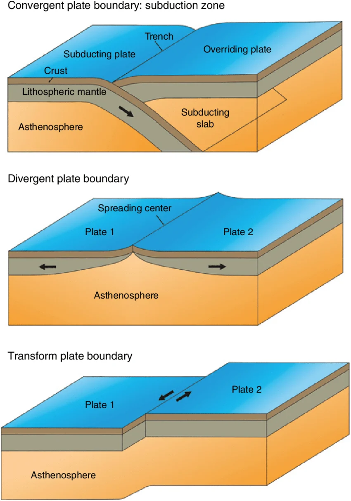

Tectonic plates are large pieces of Earth’s crust that slowly move over the layer beneath them. Their movement is caused by heat inside the Earth. Even though tectonic plates move very slowly, their movement can greatly change Earth’s surface over time. When plates move, they may separate, collide, or slide past each other. These movements happen along areas called plate boundaries. Plate boundaries are important because many earthquakes, volcanoes, mountains, and other landforms form near them.
There are three main types of plate boundaries: divergent, convergent, and transform boundaries. A divergent boundary happens when two plates move away from each other, allowing magma to rise and form new crust. A convergent boundary occurs when two plates move toward each other, which can cause one plate to go beneath another or can form mountains. A transform boundary happens when two plates slide past each other horizontally. Divergent boundaries can create mid-ocean ridges, while convergent boundaries can form trenches, volcanoes, and mountain ranges. Transform boundaries are commonly connected to earthquakes because the plates can become stuck and suddenly move.
There are many real-world examples of these plate boundaries around the world. The Mid-Atlantic Ridge is an example of a divergent boundary where plates are slowly moving apart. The Himalayas formed because of a convergent boundary where two continental plates collided. The San Andreas Fault in California is a well-known example of a transform boundary. Plate tectonics is especially important to understand in the Philippines because the country is located near several active plate boundaries. Learning about plate movement helps us understand why earthquakes and volcanic eruptions happen and why disaster preparedness is important.
I learned that tectonic plates are always moving even though we usually cannot feel them. I found convergent boundaries the most interesting because they can form mountains, trenches, and volcanoes. At first, I found it difficult to remember the differences between the three boundaries. The only thing I could remember was that convergent goes together, divergent goes away like an introvert, and transform just slips past. I still keep forgetting what each boundary can form. I also learned why earthquakes and volcanoes are common in countries like the Philippines.